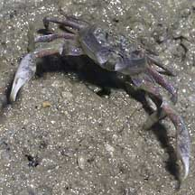
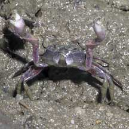
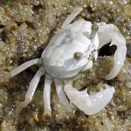

|
|
| crabs text index | photo index |
| Phylum Arthropoda > Subphylum Crustacea > Class Malacostraca > Order Decapoda > Brachyurans > Superfamily Ocypodoidea |
| Semaphore
crab Ilyoplax sp. Family Dotillidae updated Dec 2019 Where seen? This tiny but active crab is sometimes seen in our mangroves. The common name comes from its habit of vigorously waving its pincers up and down. This is reminiscent of the Semaphore flag-waving system used by sailors in the past to send messages over long distances. In the crab, this behaviour probably serves to declare territory and to attract mates. Features: Body width 0.5cm. Body somewhat round, eyestalks short. Pincers equal sized and rather bulbous. The White semaphore crab (Ilyoplax delsmani) changes its colour to white to communicate with other semaphore crabs. When they are resting, they turn a dull colour to blend in with the surrounding mud or sand. |
 Lim Chu Kang, Aug 05 |
 |
 Lim Chu Kang, Jan 04 |
| Semaphore crabs on Singapore shores |
On wildsingapore
flickr
|
| Other sightings on Singapore shores |
Links
|